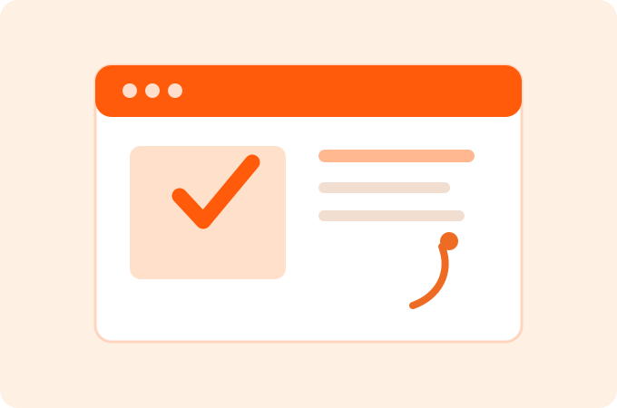

更新状況・バックアップ・管理権限。日々の運用で見落としがちな基本を整理します。
更新だけで終わらせない、サイトの安全管理
ホームページを公開したら、それで終わりではありません。WordPress本体・テーマ・プラグイン・PHPなど、時間の経過とともに見直したい部分が増えていきます。
バージョンが古いものを無条件に更新すればよいというわけではなく、使用中のテーマや機能との互換性、バックアップの有無も確認しながら進めることが大切です。
まず確かめたい3つのこと
更新できない古いシステムが残っていないか。バックアップから復元できる状態か。誰が管理権限を持っているか。基本的な確認だけでも運用上の課題が見えてきます。
サイトごとに使われている仕組みは異なります。現状を把握したうえで、必要な対策の優先順位を整理していきます。
← OrangeShareノートの一覧へ戻る